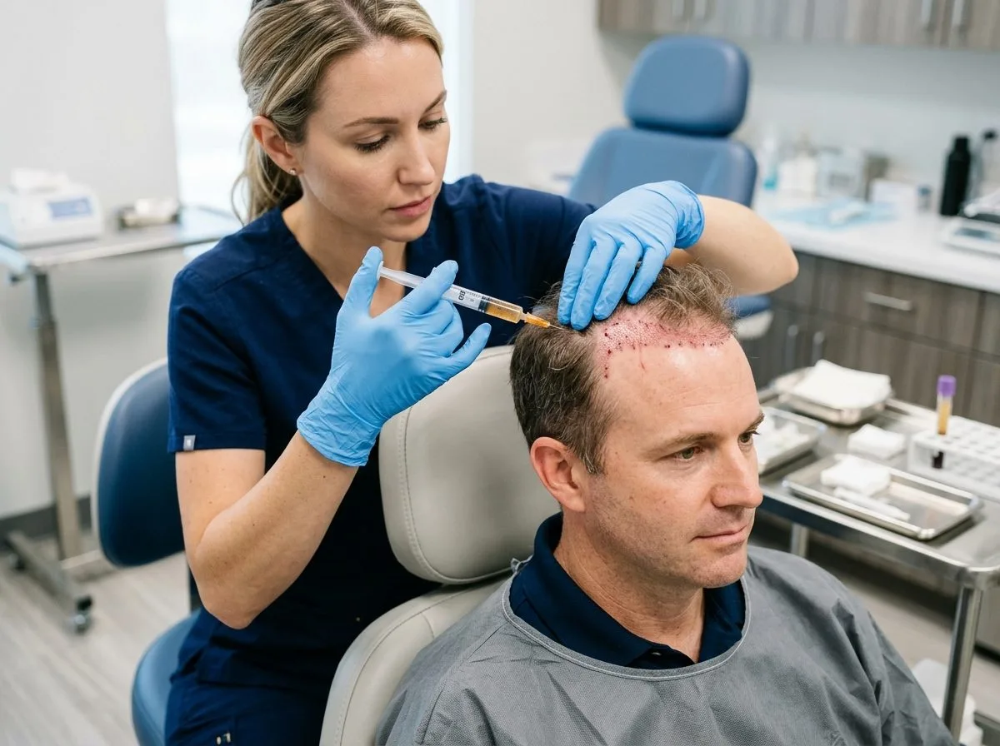
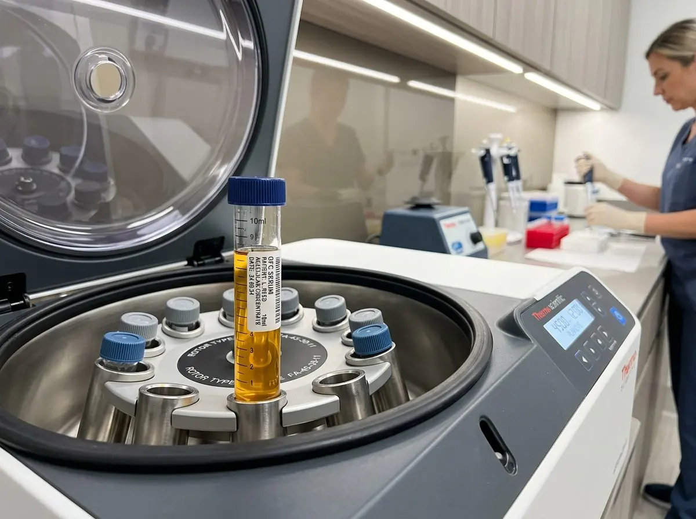

Dr. Ankit Bhalothia
Aesthetic & Hair Transplant SurgeonOral & Maxillofacial Surgeon who leads hair transplant and facial aesthetic surgery at Kezza, with a focus on hairline design and natural facial proportions.
Medical-grade autologous PRP therapy protocol that reverses hair thinning, activates dormant follicles, and promotes permanent, natural hair regrowth. Fully customized, pain-managed sessions with concentrated growth factors, performed by senior medical specialists in our sterile surgical suites across Jaipur.

"PRP utilizes your body's own concentrated autologous growth factors to awaken miniaturized hair roots. Our double-spin centrifugation ensures maximum platelet viability and natural density."
GFC (Growth Factor Concentrate) represents the next-generation evolution of hair restoration therapies. Harvested from a proprietary blood processing kit, it extracts pure growth factors without red or white blood cells. This results in minimal discomfort, low inflammation, no burning sensations, and exceptionally faster results compared to traditional PRP. Read our complete GFC treatment guide.

"Our GFC protocol provides maximum concentration of pure autologous growth factors without inflammatory cell debris, delivering significantly faster results with absolute patient comfort."
Every therapy session adheres to stringent clinical guidelines, maintained for optimum patient safety and results.
Digital scalp scan & magnification assessing hair density, scalp sebum, follicular miniaturization, and active hair units.
Safe extraction of 10-20ml venous blood into sterile vacuum tubes containing specialized clinical anticoagulant.
Optimal RPM centrifuge separation isolates enriched platelet layer or activates acellular growth factors without damage.
Application of medical-grade topical anesthetic spray and cooling vibration device for maximum patient comfort.
Super-fine 30G/32G needles gently deliver concentrated growth factors directly to dormant follicular units at the dermal layer.
Growth factor therapy activates dormant cycles; visible changes unfold across progressive biological phases.
In-clinic trichoscopy documentation showing progressive hairline revival, follicle sprouting, and shaft caliber growth across consecutive PRP treatments.
Micro-needle delivery of autologous growth factors directly to miniaturized roots. Stimulates micro-capillary vascularity and initiates the awakening of dormant hair follicles.
Photographic evidence of advanced male crown thinning reversed with autologous PRP therapy, achieving complete follicular canopy coverage.
Temporary weak hair shedding stops. Noticeable reduction in daily hair fall during combing and washing. Scalp micro-circulation and sebum normalization begin.
Miniaturized hair follicles awaken from telogen into anagen phase. Emergence of early soft, vellus hairs with improved root anchoring and capillary blood supply.
Noticeable terminal hair thickening. Decreased scalp visibility across crown and parting lines. Improved hair bounce, volume, and natural tensile strength.
Maximum hair coverage and shaft caliber achieved. Sustained robust hair health supported by scheduled maintenance sessions every 4 to 6 months.
PRP costs ₹3,000 per session and GFC ₹4,000 per session at Kezza. Dr. Ankit Bhalothia sets the number of sessions after a scalp assessment.
Prices per session at Kezza Clinic as confirmed in October 2026. Your plan depends on your stage of hair loss and how you respond.
Ask about your plan
Oral & Maxillofacial Surgeon who leads hair transplant and facial aesthetic surgery at Kezza, with a focus on hairline design and natural facial proportions.
Answers to common queries about hair and skin growth factor therapy to help you make an informed decision.
No. Prior to micro-injections, we apply a pharmaceutical-grade topical numbing agent combined with a specialized skin cooling vibration device. Most patients describe the sensation as a light tap or mild pressure. GFC therapy is virtually pain-free due to its acellular, cell-debris-free formula that avoids burning sensations.
For PRP, the first course is usually 4 to 6 sessions spaced 3 to 4 weeks apart, and a full plan at Kezza runs to 8 to 10 sessions including follow-up sessions, as per your requirement. A GFC plan is usually 4 to 5 sessions about 4 weeks apart. Hair shedding stabilizes within month 1, and noticeable density improvement appears around months 3 to 4.
PRP stimulates native hair follicles and reverses miniaturization. However, because genetic hormones (DHT) naturally persist over a lifetime, periodic booster sessions (once every 4 to 6 months) are recommended to sustain peak follicular vitality and density indefinitely.
Yes, absolutely. PRP is considered a gold-standard companion therapy for hair transplants. Administering PRP or GFC during or after transplantation accelerates donor healing, reduces shock loss, and promotes rapid vascularization of newly implanted follicular units.
At Kezza Clinic, PRP costs ₹3,000 per session and GFC costs ₹4,000 per session. A PRP plan is usually 8 to 10 sessions and a GFC plan 4 to 5 sessions, as per your requirement. Dr. Ankit Bhalothia confirms your plan after a scalp assessment; ask the team about payment options.
Because PRP and GFC are 100% autologous (harvested from your own blood), there is minimal risk of allergic reaction, foreign body rejection, or systemic toxicity. Mild temporary scalp redness or tenderness settles completely within 12 to 24 hours.
Yes, women are exceptional candidates for PRP and GFC. It is highly effective for female pattern hair thinning (Ludwig scale), diffuse hair loss, widening parting lines, and postpartum telogen effluvium, requiring zero shaving and zero social downtime.
We advise keeping the scalp dry for 24 hours following the procedure to allow full absorption of the growth factors into the dermal papilla. You may wash your hair with lukewarm water and a mild, sulfate-free prescribed shampoo after 24 hours.
Both are made from your own blood, but they are prepared differently. PRP injects concentrated platelets in plasma, which release growth factors after injection. GFC activates the platelets during preparation and injects the released growth factors without the cells. A 2026 randomised trial found similar regrowth with both when combined with minoxidil, and patients rated GFC injections as less painful. Your doctor recommends one after your scalp assessment. Read our PRP vs GFC comparison.
Most people first notice less hair fall within the first one to two months. Visible gains in density usually appear around months 3 to 4, and the effect of a full course is judged at about 6 months. Results are better when hair loss is recent and the injections are combined with the medical therapy your doctor prescribes. How many PRP sessions do you need?
Real Patient Comments & Clinical Results
Authentic commentary and clinical outcomes from patients who underwent PRP (Platelet-Rich Plasma) Therapy & GFC treatment for hair density restoration.
“Started seeing excessive crown shedding in my late 20s. After session 3 of PRP, hair fall dropped drastically, and tiny follicular sprouts appeared along my temples. By month 6, the scalp visibility reduced noticeably.”
“Zero downtime and remarkably comfortable with local cooling. The follicular density and strand thickness improved remarkably. Hair pull test went from 8 strands down to 1. Best non-surgical investment I made.”
“Combined PRP with topical minoxidil under clinical supervision. The hair shaft caliber is significantly thicker and my parting line has narrowed. Outstanding medical care.”
“As a practicing physician myself, sterile centrifuge protocols and platelet yield are crucial. Kezza’s clinical methodology is textbook grade. My crown density improved substantially by the 4th cycle.”
“Experienced sudden diffuse hair shedding after stress. GFC gave noticeably faster regrowth than expected. Virtually zero post-session irritation and hair root strength has doubled.”
“Widening hair parting was causing major distress. After four targeted sessions, the visible scalp area along the center partition filled in beautifully. Highly recommend the medical team!”